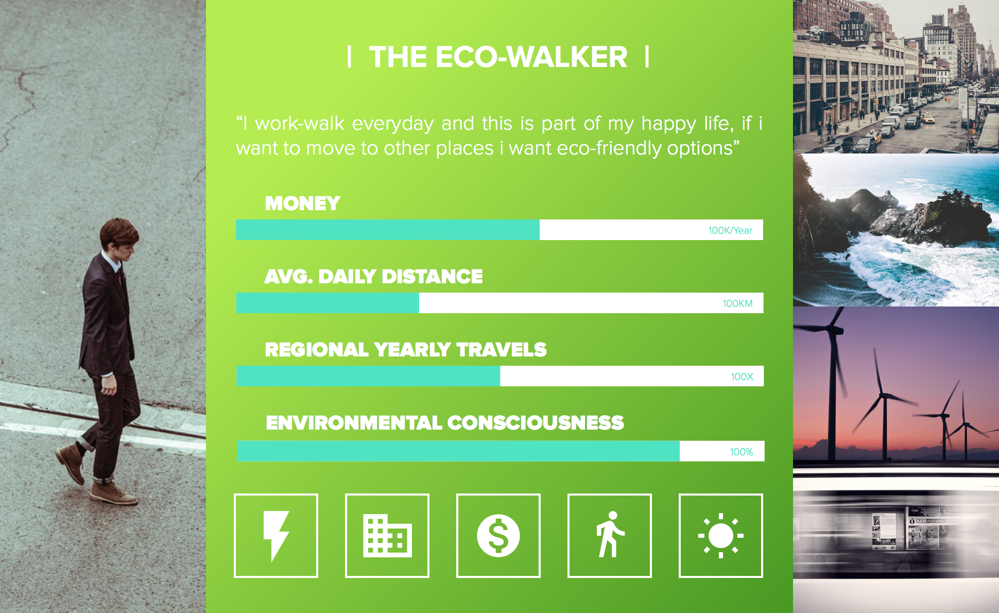

UX Strategy, User Journeys and Sitemaps
What is UX Strategy?
It’s the vision of a solution that needs to be validated with real potential customers to prove that it’s desired in the marketplace. Although UX design encompasses numerous details such as visual design, content messaging, and how easy it is for a user to accomplish a task, UX strategy is the ‘Big Picture.’ It is the high-level plan to achieve one or more business goals under conditions of uncertainty.

Touchpoints & User Journeys
Touchpoints are all the points at which a user comes into contact with a brand. Part of a good UX strategy is understanding all of the points at which a user may come into contact with the brand.
- Websites
- Apps & Mobile Experiences
- Support Services
- Social Media

A journey map is a visualization of the process that a person goes through in order to accomplish a goal.
Steps / Best Practices
- Understanding who your customers are (Personas)
- Understanding your customer's goals (scenarios) and expectations
- Unerstand the phases (high level meaningful chunks that tell the high level narrative)
- Understand actions, mindsets and emotions throughout the phases.
- What did you learn?

Takeaways
- takeaway list item
Best Practices
- best practices list item
Examples
Assignment
- Cypress Mountain Resort
- Identify three personas that represent the humans that would be likely to visit the resort website, and briefly summarize their use case.
- Select one of those personas and build a fictional / proto persona that includes data from the other persona types.
- Submission: IDES 212 folder on the server
- Due January 24 2020 at 12:00pm
Evaluation Critiera
| Value | Outcomes |
|---|---|
| 5 | The three personas you identified & summarized demonstrate an understanding of the differences between how a human would use the website. |
| 10 |
|
| 10 | Your persona is presented in a way that clearly displays the different characteristics, is logically organized, and follows best practices. It is also visually pleasing to look at. |